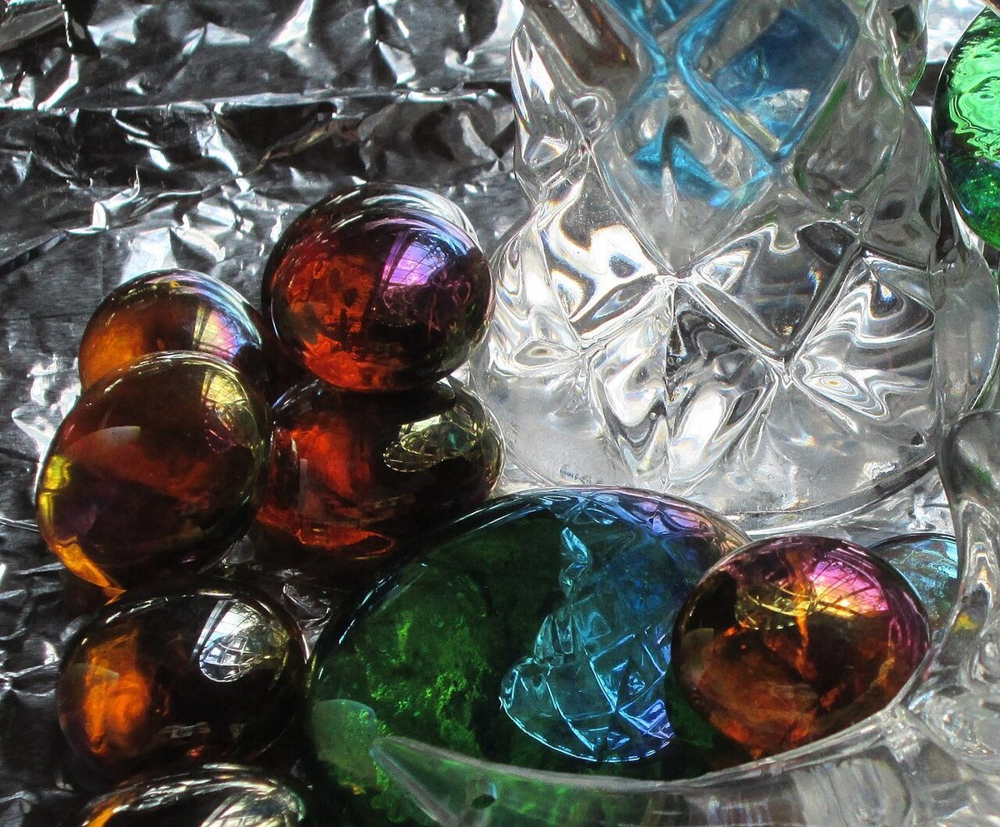
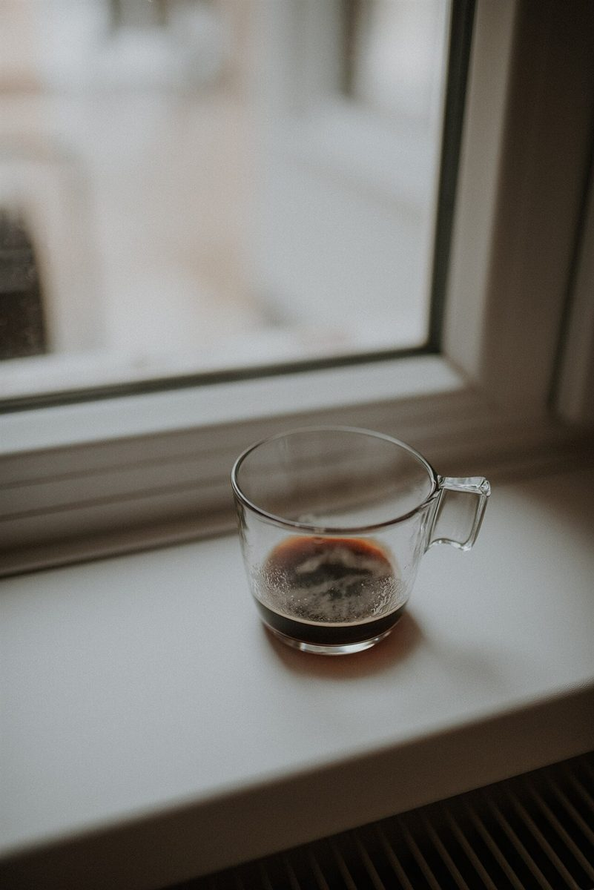

カフェ / 三重県鈴鹿市
ippngi農家カフェ
三重県鈴鹿市のカフェ「農家カフェ ippongi」のご案内ページです。営業時間やメニューなど、詳しいことは準備中。電話とInstagramで、お店の情報を確認できます。

制作側の連想
ippongi の まんなかに「pong」
屋号をローマ字で見ると、真ん中あたりに「pong」という綴りが並んでいます。制作側はそこから「ポン」と弾むボールを連想し、このページを「弾む軌跡」の作りにしました。写真は丸く切り抜き、ボールが跳ねるように上下にずらして並べています。これは制作側の連想で、お店の理念・由来とは無関係です。屋号の意味は分かりません。
ひとつ、ふたつ、ポン
弾む写真たち(イメージ)
写真は国外か撮影地不明のフリー素材で、お店のものではありません。



ご案内
お店のこと(確認できたものだけ)
| 所在地 | 〒513-0054 三重県鈴鹿市中箕田１丁目２−６ |
|---|---|
| 電話 | 059-385-1726 |
| 営業時間 | 準備中 |
| 定休日 | 準備中 |
| ご予約 | 準備中 |
| 駐車場 | 準備中 |
| SNS | Instagram @cafe.ippongi |